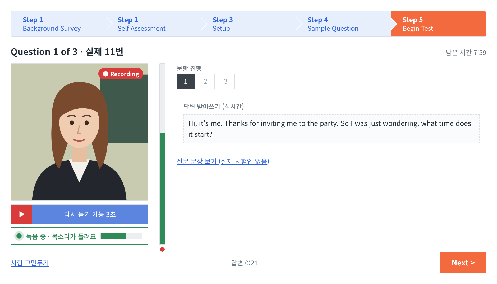
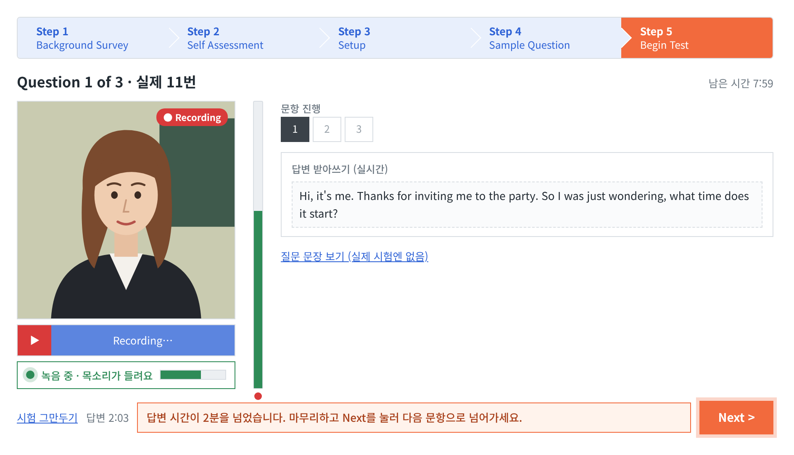
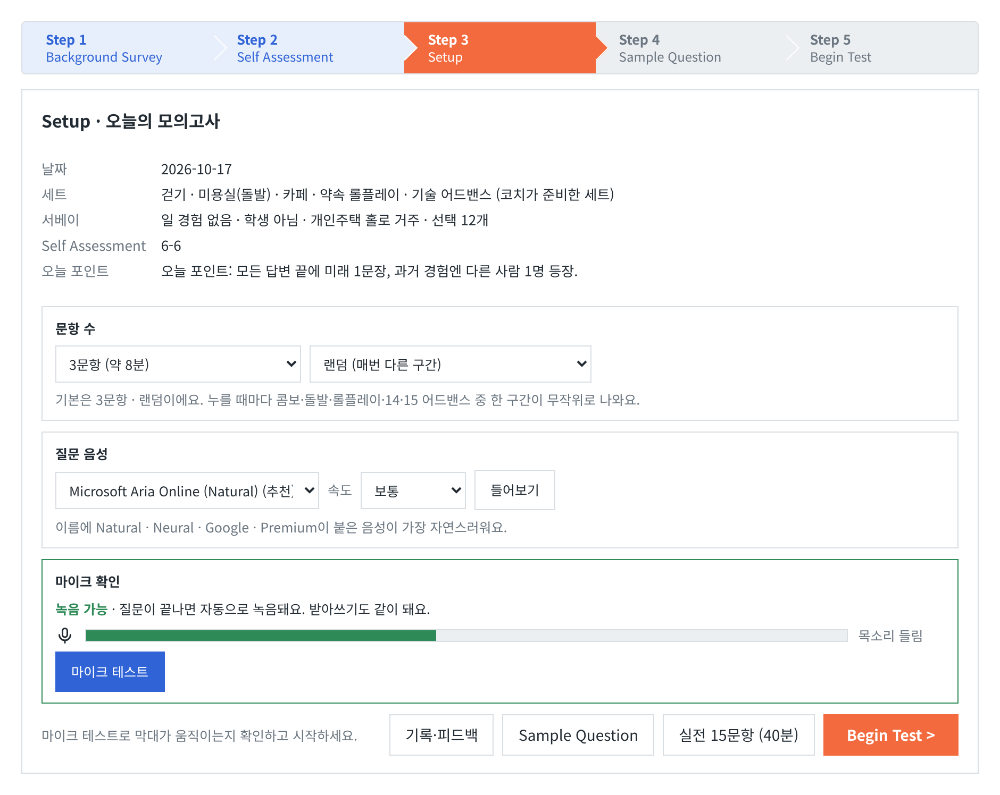
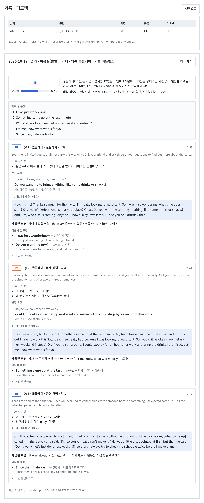

Ava처럼 질문을 읽어 주고, 질문이 끝나면 자동으로 녹음하고, 답변을 받아 적어서 AL 기준으로 첨삭해요. 설치 없이 브라우저에서 바로 시작할 수 있어요.
Chrome 권장 · 마이크 허용 필요 · 녹음과 기록은 내 브라우저(또는 내 컴퓨터)에만 저장돼요

실제 시험 규칙을 그대로 옮겼어요. 그리고 시험장에서는 알 수 없는 것 — 내가 몇 초 말했는지, 무엇이 AL을 막는지 — 까지 보여줘요.
▶을 눌러 질문을 듣고, 끝나는 순간부터 답변 시간이 흘러요. 2분이 넘으면 다음으로 넘어가라는 안내가 떠요.

말하면 볼륨 막대가 오르내리고 초록 상태줄이 켜져요. 실시간 받아쓰기가 그대로 첨삭 재료가 돼요.

예상 등급과 유창성, 문항마다 AL을 막는 2가지, 문장 교정, 재답변 미션, 외워 둘 문장 5개. 없는 경험을 지어내지 않고 내 이야기로 고쳐 줘요.

채점 기준은 하나(ACTFL Advanced Low 기준을 구체적인 체크리스트로 바꾼 것). 엔진만 골라 쓰면 결과 화면은 똑같아요.
| 방법 | 하는 일 | 비용 |
|---|---|---|
| 복사 · 붙여넣기 (기본) | “채점 프롬프트 복사” → Claude·ChatGPT·Gemini 아무 채팅에 붙여 넣기 → 답을 다시 붙여 넣기 | 무료 |
| 내 API 키 | 시험 직후 자동 채점 (Anthropic · OpenAI). 키는 내 브라우저나 내 컴퓨터에만 저장 | API 사용료 |
| 로컬 모델 | Ollama · LM Studio로 완전 오프라인 채점 (로컬 서버 모드) | 무료 |
| 밤 자동 채점 | Claude 예약 작업이 밤에 채점하고 GitHub 잔디까지 채워요 (만든 사람의 방식) | Claude 요금제 |
화면과 기능은 같아요. 어디에 저장되고 누가 문제를 만들어 주는지만 달라요.
녹음과 결과가 파일로 남고, 예약 작업이 매일 밤 내 약점에 맞춘 세트를 넣어 줄 수 있어요. Python 3만 있으면 돼요.
git clone https://github.com/leesk212/OPIC-Mock-Test.git cd OPIC-Mock-Test && python3 server.py
로컬 서버를 터널로 열고, 이 사이트의 /go/ 고정 링크가 그날 주소로 넘겨줘요. 휴대폰에서도 녹음돼요. 비밀 키가 있는 링크로만 열려요.